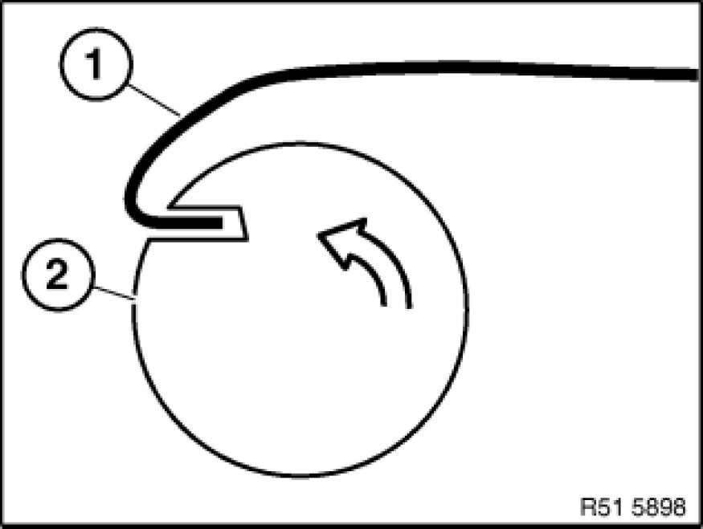

Removing Windscreen With "Roll Out 2000"
51 31 ... - Removing windscreen with "Roll Out 2000"
Windscreen removal system "Roll Out 2000"

Note:
Both paintwork and ergonomic and health-endangering damage is minimized with the "Roll Out 2000" system.
Sourcing reference:
See Aftersales Assistance Portal (ASAP) - Service/Technical - Workshop Equipment (Start BMW) - Shop Workshop Equipment.

Warning!
Follow safety instructions 51 00 ... Safety Instructions For Working on Cars With Airbag Systems for working on cars with airbag systems (risk of injury).
Important!
Take care when handling sharp-edged tools and cutting wire (risk of damage to head airbag and window glass).

Important!
Always keep both suckers dry and clean to ensure their optimum adhesion on the windscreen.
Lubricate spool if interlock rattling becomes too loud.
Always wear protective goggles and gloves for your own safety.
Mounting suction cup lifters on windscreen or rear window:
- Secure position of suction cup lifters as shown:
1. Suction cup lifter with double spool
2. Suction cup lifter with single spool
3. Window glass
4. Cutting wire
Preparatory work:
- Cut off required length from cutting wire:
Window glass diagonal x 6
- The cutting wire loops must lie on top of each other in area (B).
They must not get caught up in each other. (Otherwise no possibility of cutting the adhesive bead / wire tears.)
Overlapping of cutting wire loops approx. 10 cm.
Distance from right window edge approx. 30 cm.
Pulling cutting wire into car:
- Cut off wire end (1) at an angle and thus pierce adhesive bead (2).
- Wire end must be bent to window glass.
Laying cutting wire around windscreen:
- Starting from pull-in point, lay wire eyelet created on the outside around the window glass
- Pull excess wire into car interior
Important!
Make sure the cutting wire is located at all four corner points below the windscreen.
Check that the cutting wire is not caught on retainers or body.
Secure window glass on outside with adhesive tape against slipping.
Note:
Windows (1) with fitted seals (3) or sprayed-on surrounds:
- Moisten cutting wire (4) and seals (3) on window (1) with water
- Insert cutting wire (4) in bend (without kinking) between window (1) and body cutout (2)
Protecting car interior:
- To avoid damage and if necessary dirt, protect A-pillars, roof and instrument panel trim (3) by means of plastic disc (1)
- Always carry plastic disc (1) between respective wire (2) being strained and trim panel components

Suspending wire in suction cup lifter with double spool:
- Insert cutting wire (1) in spool (2) and thereby bend wire
- Insert second wire end in second spool and likewise bend
- Turn spool (2) by hand and wind up loose wire
Starting removal:
Note:
Spool can only be turned in one direction.
- Make sure the wire is always situated in the guide channel of the suction cup lifter (1)
- Fit reversible ratchet on spool (2) and tension wire
- Start by cutting lower adhesive bead
- Both wires meet ahead of both spools when removal is completed
- Remove "Roll Out 2000"
- Remove disc